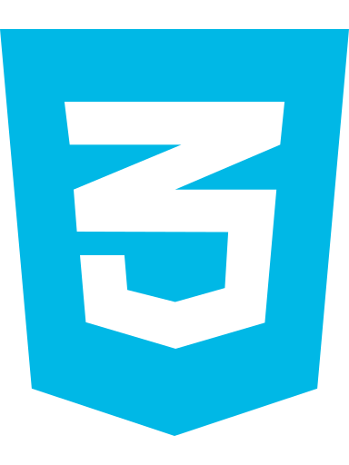
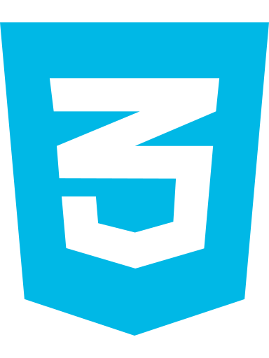

Café Arte

Café Arte, es un lugar donde ofrece los menjores granos del mundo. Desde Las Ameríca hasta El África, sus cafetales tienen un estricto cuidado para obtener el mejor aroma y sabor. Nosotros te lo llevamos a tu casa o tu tienda.
Proyecto realizado En el marco del curso de DIGITAL HOUSE
Tecnologías
Este proyecto está realizado con las siguientes tecnologías
 



Contenido
Describir contenido
Inicio
En la pantalla principal encontraremos, además de la barra de navegación para poder acceder a la totalizada de la página, una sección de productos en oferta y otra seccion de productos destacados. Finaliza con un footer donde brinda informacion de la ubicación, redes sciales y contacto.
Nuestros Cafés
En esta seccion se muestran todos los productos referidos al café que ofrecemos. Clickeando sobre un producto se lo llevará a una descripcion del mismo como también a sugerencias de otros productos relacionados.
Nuestras delicias
En esta sección se muestran productos con el cual podemos acompañar a Nuestros Cafés. Existen alfajores, galletitas, chocolates y barras de chocolate con dulce de leche. Al clickear sobre el producto, se mostrarán detalles y otras sugerencias.
Otras caracteristicas del proyecto
Login de usuario
Es posible crear una base de datos de usuarios dende se requeriran determinados datos. Por ser potenciales clientes, deberán tener que completar el formulario correspondiente.
Buscar producto
Es posible buscar un producto por alguna palabra o conjunto de palabras que lo describan
Contactanos
Es posible poder enviar un mail desde nuestra página para poder escuchar tus dudas o sugerencias.